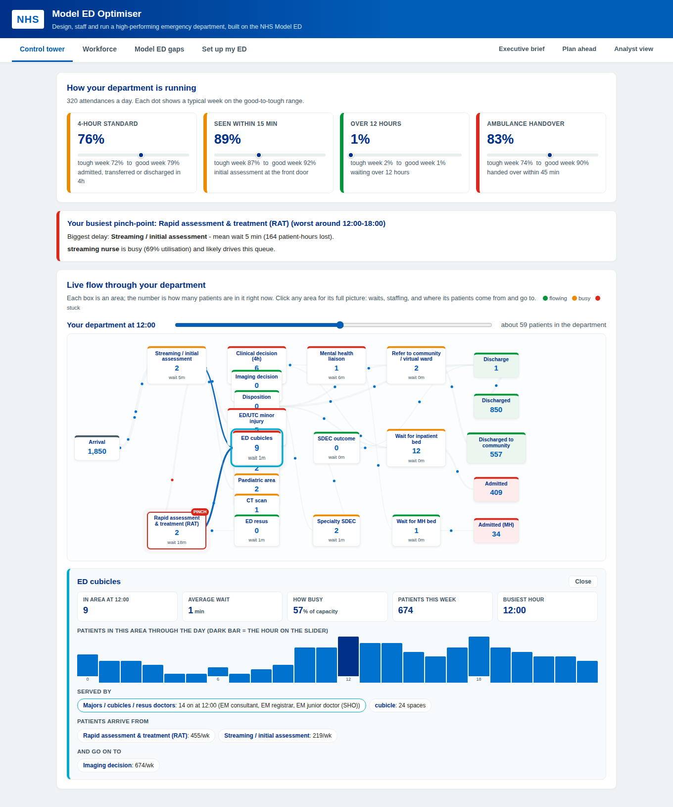
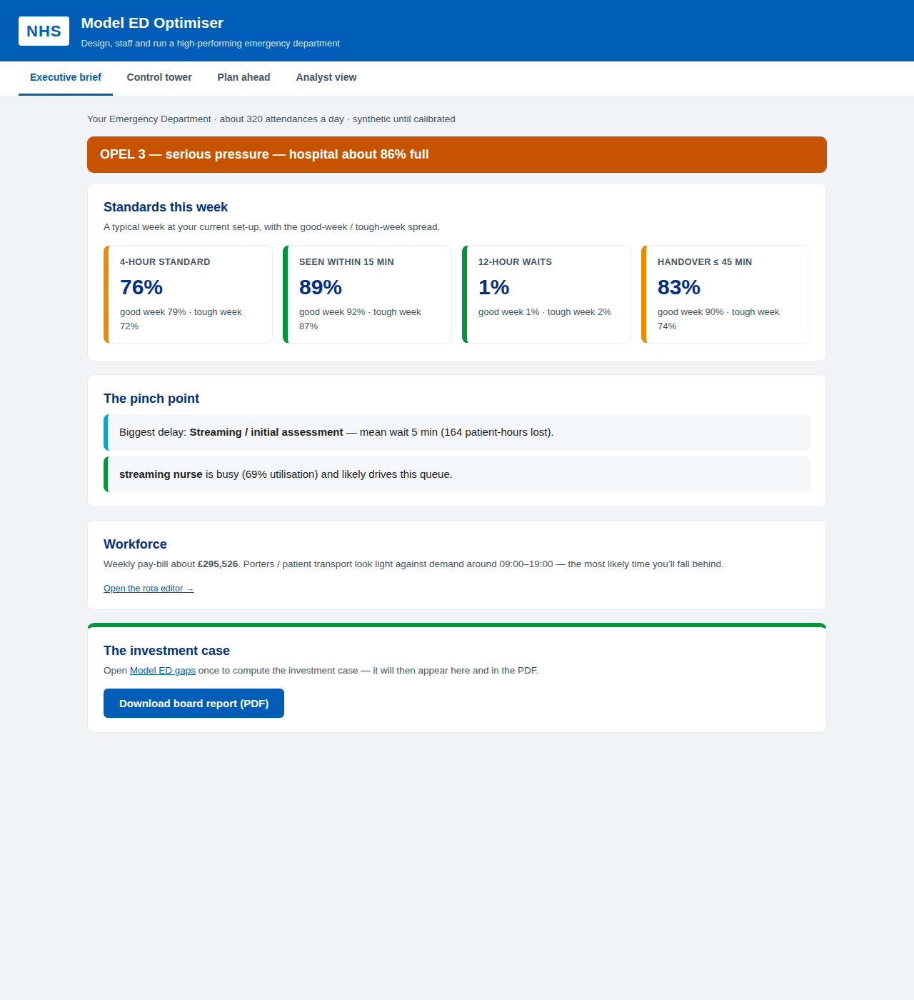
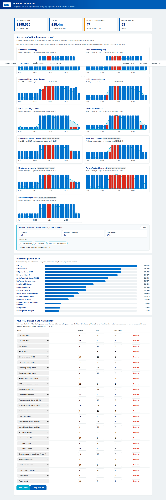
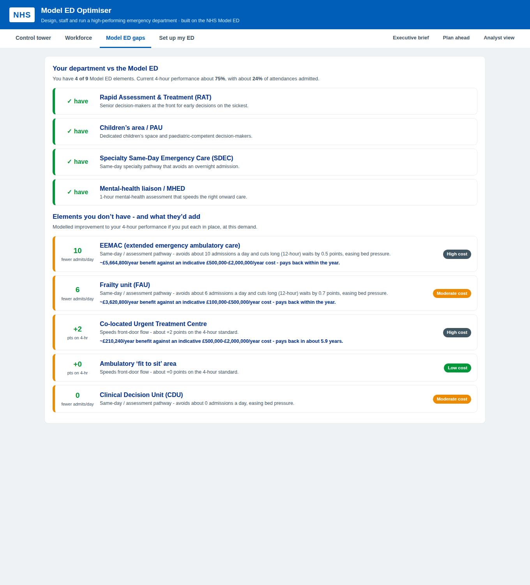

Model ED Optimiser
A digital twin of your ED - flow, workforce and money in one place - so every change is tested in the model before it is tested on patients.
Built on the NHS England Model Emergency Department · runs on locked-down NHS networks · every assumption visible and editable
The problem
Boards and ICBs increasingly ask for modelled evidence behind winter plans and capital bids. The trusts that bring it win the argument.
The product

Why it can be trusted
For the executive

For the workforce lead

For the business case

Decision support
Your data, your control
Engagement
The ask
We will hand your board a modelled winter plan, a costed investment case, and a control tower your site team checks every morning - all validated against your own data, with every assumption on the table.
Model ED Optimiser - see the queue before the queue sees you.